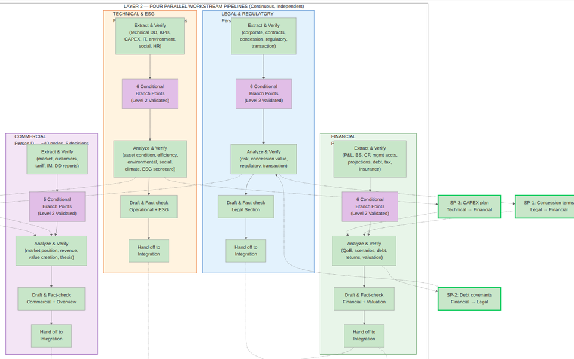
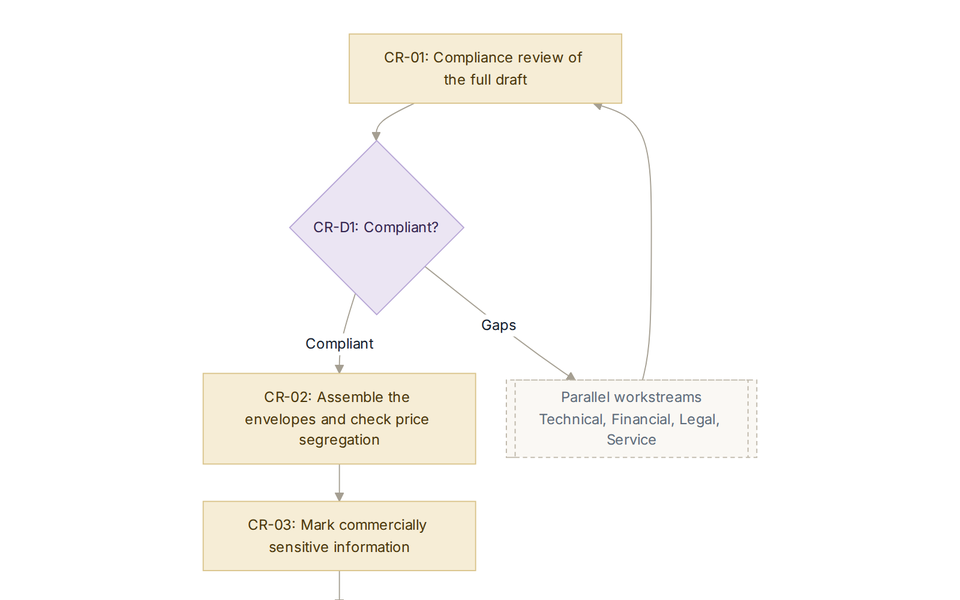
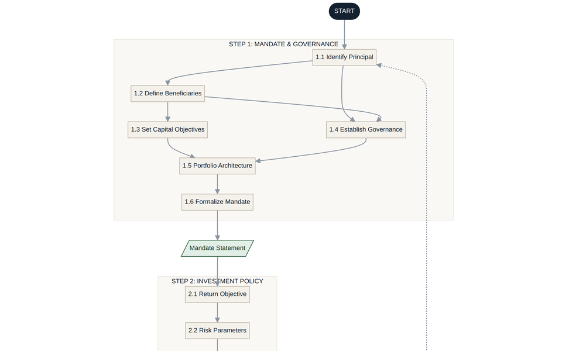

Investment work, mapped for AI
How deals and portfolios actually get done, step by step, with a clear line between what a model can do and what stays with people.
I built these maps at SpaceXAI, where I lead the portfolio management pod. Each one is written so an AI agent can follow it as a skills file. Together they cover more than 500 mapped steps and tasks.
The maps

IC memo production
Everything behind an infrastructure investment committee memo, split into legal, financial, technical and ESG, and commercial workstreams.

PPP bid preparation
A PPP bid from the first pipeline signal to financial close, mapped against the APMG PPP Certification Guide, with a named owner on every task.

EM infrastructure portfolio
Running an emerging-market infrastructure portfolio from mandate to watchlist, with screening under the IFC Performance Standards.
Financial modeling playbook
Building a model that holds up in review, from scoping and architecture to stress tests and circular references.
Portfolio construction framework
A general process that routes by objective type and selection method, with three tiers of feedback.
AI-assisted equity portfolio pilot
A five-week pilot for a US equity value portfolio, from mandate to mock investment committee, using public data only.
How the maps are made
Map the work as practitioners do it
Every step, handoff and check, including the ones nobody writes down.
Classify each step
Decide what a model can do alone, what needs a reviewer, and what stays with people.
Put the gates where the risk is
Go or no-go points sit before money or reputation is committed.
Write it for an agent
Turn the map into a skills file, then check whether a model actually follows it.